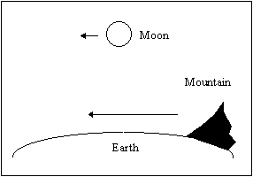
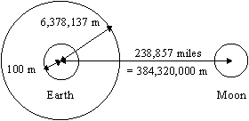
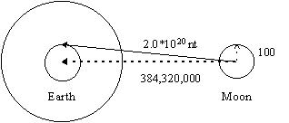
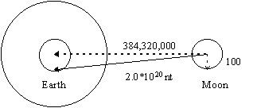

The Escaping Moon, Revisited
Radar and laser measurements over the past several decades have shown that the moon is moving an average of 4 cm farther from the Earth each year. It is of interest to know how fast the Moon is escaping from the Earth because that not only tells us how far away the Moon will be in the future, it also tells us how far away the Moon was in the past. Since there is a limit to how close the Moon could ever have been to the Earth, that sets a maximum age limit for the Earth.
Our investigation of this phenomenon began when we read,
|
"One cannot linearly extrapolate the present 4 cm/year separation rate back into history. It has that value today, but was more rapid in the past due to tidal effects. In fact, the separation rate depends upon the distance to the 6th power, a very strong dependence. ... the rate is now 4 cm/year, was perhaps 20 m/year 'long ago', and the average is 1.2 m/year" [Physicist Donald B. DeYoung, Ph. D., in personal correspondence to Paul S. Taylor (January 6, 1989).
1
|
We wondered where that "6th power" effect came from, but could not find any explanation in the literature. So, we tried to solve the equations ourselves, and published the controversial essay, Our Escaping Moon, in our November, 1997, newsletter. We got one angry phone call (which we described in our December, 1997, newsletter) saying that our analysis was "hogwash". But the angry caller hung up before we could get him to tell us specifically what mistake he thought we had made in the calculations.
We later met someone else who also disagreed with our analysis. He was unable to explain why he thought it was wrong on the spot. He just said it had something to do with "land tides." We asked him to write a rebuttal to our essay. Two years have gone by without a response from him. We think there are a couple of reasons for this. First, it is a difficult calculation to do. Second, if you do the calculations (as we have), they show the effect is negligible.
We are aware, however, that we could have made a mistake. We did our calculations using a spreadsheet, and we could have clicked on the wrong box when entering the formulas. If we made a mistake in our calculations, we really want to know it.
Ken's Rebuttal
The invitation in our December, 1997, newsletter for anyone to submit a better explanation of why the moon is escaping, and how to calculate the rate, has gone unanswered until recently. On October 19, 1999, we finally got this e-mail:
Subject: The escaping moon.
Date: Tue, 19 Oct 1999 12:02:48 -0400
From: Ken [last name and e-mail address deleted]
Organization: [Defense contractor's name deleted]
To: do_while@ridgecrest.ca.us
Dear Mr. Do-
I hope you don't mind me using your first name. I am writing you not in
the spirit of flame, but as a sincere Creationist who values the
contributions (small as they are) of science to proof that the universe
and the life that we know of could not have happened by chance. It is
in this spirit that I am asking you to pleeeeese remove the your article
about the moon as it is seriously flawed and portrays the creationist
movement as idiotic to the general public. This is simply bad PR that
the Creationist movement can not aford.
The basic problem with your analysis of the paradox of why the moon
seems to be falling away as it "loses" energy, is simply that it is not
losing energy. It is gaining energy. The work being done is mainly
being done by the earth as it pulls the moon around accellorating its
orbit. If the moon rose in the west and set in the east this would be a
different story, in that case the earth would be working against the
moon and slowing it down. The fact is that it is the EARTH that is
slowing its rotation and the moon that is increasing its angular speed
over time. Redo the math and you'll see your mistake.(I hope) Remember
the moon is traveling in the same direction as the rotation of the
earth, not against it. Also, the moon takes 30 days to orbit while the
earth rotates in 24 hours, in addition we are 4 times the size and 6
times the mass of the moon. Take these factors into account, if you have
trouble let me know I'll send you the proof myself. Good luck, but in
the mean time, PLEEEEEEEEASE help the cause and remove that errant
article.
Thanks
|
Since the e-mail came from a defense contractor's e-mail account, and since Ken's spelling is bad enough for him to be an engineer  , we were encouraged that he might be able to supply a valid explanation of the phenomenon. The fact that he mentioned the direction and orbital period of the Moon relative to the rotation of the Earth led us to believe that he might have investigated the "land tide" hypothesis and had done the calculations. We were slightly puzzled by Ken's claim that the Moon orbits the Earth in 30 days (it actually takes 27.3 days) and that the Earth is "6 times the mass of the moon" (it is actually 81 times as massive), but we attributed the former to rounding and the latter to be an inconsequential copying error. (In fact, Ken did say the moon was 81 times as massive as the Earth in a subsequent letter.)
, we were encouraged that he might be able to supply a valid explanation of the phenomenon. The fact that he mentioned the direction and orbital period of the Moon relative to the rotation of the Earth led us to believe that he might have investigated the "land tide" hypothesis and had done the calculations. We were slightly puzzled by Ken's claim that the Moon orbits the Earth in 30 days (it actually takes 27.3 days) and that the Earth is "6 times the mass of the moon" (it is actually 81 times as massive), but we attributed the former to rounding and the latter to be an inconsequential copying error. (In fact, Ken did say the moon was 81 times as massive as the Earth in a subsequent letter.)
Land Tides
 |
Some people, Ken for example, claim that "land tides" transfer energy from the spinning Earth to the Moon. Imagine that we are looking down on the Earth from above the North Pole. The Earth is rotating counter-clockwise, and we see a massive mountain moving from right-to-left as shown in the diagram. The theory is that the mountain will drag the moon along with it. The increased speed is supposed to move the Moon to a higher orbit.
|
We know that local variations in gravity do exist, and do slightly affect the orbit of Global Positioning System (GPS) satellites enough that tiny corrections are made to account for it. But GPS satellites are much lighter than the Moon, and much closer to the Earth. Since the effect on them is so small, we really would not expect any measurable effect on the Moon. But (at that time) we hadn't done the calculations. Since Ken appeared to be familiar with the theory, we asked him to send us the proof. We got this response:
Subject: Re: The escaping moon.
Date: Tue, 26 Oct 1999 11:01:45 -0400 (EDT)
From: "Ken"
To: do_while@ridgecrest.ca.us
> From do_while@ridgecrest.ca.us Thu Oct 21 20:38 EDT 1999
> Date: Thu, 21 Oct 1999 17:32:14 -0700
> From: Do-While Jones
> X-Accept-Language: en
> MIME-Version: 1.0
> To: Ken
> Subject: Re: The escaping moon.
> Content-Transfer-Encoding: 7bit
>
> Please send me the proof and I will look at it.
>
As you wish..
This has taken me a while but I just didn't have time to send it back to you right away.
I hope you will reconsider what you have posted on your website, and stop embarasing
serious creationists with such unscientific nonsense. At this point I just want to
assume that someone you trusted gave you that article and you posted it without really
knowing what a rediculless notion you were advocating. We all make mistakes, but let's
not make the kind that will continue to convince the atheists that we're all a bunch of
loonies, O.K?
Just a few things to get started.
First...Your essay ignores several important factors in order to reach
the conclusion that it does. Foremost is the fact that the earth
(@ 5.98 X 10^24 kg) is roughly 81 times the mass of the moon
(@7.35 X 10^22 kg), this is important when considering the work being
done in as much as the Work being done is equal to the combined gravitational
force being applied ( in this case 2.1 X 10^20 newtons *directed toward the
center ofthe earth *) times the angular displacement of the moon relative
to the earth. Force of course as you may know is defined by Mass(m) times
Accelleration(a).
So let's just start with that,
Force(F) = Mass(m) X Accelleration(a)
Work(w) = Force(F) X Displacement(s)
One can clearly see from this that the work being done by the
earth on the moon is greater (by 8100%) than the work being done
by the moon on the earth. Keep in mind that while it is true that
the moon is lifting our surface water several feet a day, the
earth is constantly accellorating the moon (think of it as
constantly lifting the moon) in order to keep it in orbit. In
addition, the fact that the moon is moving away from us indicates
that the forces between the earth and moon are not yet in
equilibrium with the angular velocity of the moon.
Now your article states that the moon is "Falling away from the earth"
at a rate of .4cm per year. I will accept this figure, in as muchas you
report it comes from reliable sources (NASA).
How much force would have to be applied to the moon in order for it to
move this far annually?
The formula for evaluating this is given by:
^GPE = -GMm { 1/ri - 1/rf)
Where ^GPE is the Change in Potential energy.
GMm is the Mutual gravitation of the bodies
ri is the initial radius of the orbiting body, and
rf is the new position of the orbiting body
^GPE = -2.1E+20 ( 1/3.14e+8 Meters - 1/(3.14E+8 Meters + 4E-3 Meters))
^GPE = -2.1E+20 ( 3.18E-9 - .000000003179999999996 )
^GPE = -6.68E+12 + 6,680,011,111,111.119 Approximate
^GPE = 11E+6 joules converted to foot pounds (Joules times .7375 = ft/lbs)
Or approximately 7,380,000.00 foot lbs of force per year.
This is the combined force that the earth/moon is excerting on
the moon/earth with their combined gravity. This is a positive
force being applied to the moon, but when calculated for the
earth it is negative. Which means that while we are actually
accelerating the moon's potential (thereby throughing it into
space at the rate of .4cm per year) the earth is experiencing a
drag on its rotation of -7,380,000.00 foot/pounds per year
which is slowing our rotation.
If you need more proof than this, I recommend that you go to the library
and get any competent Physics Text. I recommend "The Physical Universe"
by Donald E. DeGraaf.
There's nothing complicated going on here, but the moon is definitely
NOT loosing potential energy and falling away from the earth.
|
We were disappointed because his "proof" doesn't even address the problem. In his first letter, he claimed that the rotation of large masses in the Earth were affecting the Moon's orbit. You don't have to be a mathematician to realize that if the non-uniform distribution of mass on the Earth is dragging the Moon in the same direction as the Earth's rotation, then the speed and direction of the Earth's rotation, and the amount of mass imbalance, should appear somewhere in the equations. Since these quantities don't even appear in the equations, they can't possibly have any affect on the calculation. Ken copied the wrong equations out of a physics book.
Furthermore, the issue isn't really why the Moon is escaping. The issue is how far the Moon was from the Earth in the past. We only care about the mechanism so we can calculate the radius of the Moon several million years ago. Ken's equations don't tell us anything about the distance between the Earth and the Moon in the past. So, it doesn't matter if Ken's equations are right or wrong. They are irrelevant.
So, We Stalled
We didn't know quite how to respond to Ken's letter. We wanted time to try to put all the pieces together in a logical explanation that most of our readers (not just Ken) could understand. It is difficult to find the right level of mathematics that explains the physics without completely snowing people who have never taken calculus. It isn't something that one can just ad-lib at the keyboard.
In the second draft of this essay, we went through all of Ken's equations in gory detail. We pointed out that he used the wrong value for the distance between the Earth and the Moon, and apparently used 4 cm even though he wrote "4E-3 Meters". We explained the danger in computing small differences between large numbers, and showed an algebraic manipulation that would have avoided the problem. The detailed explanation was so long and boring we cut it out of the third draft.
We wanted to find a diplomatic, gentle way to explain to him why he is wrong. So, we just sent him a polite reply saying that we would look into it. Admittedly, we were stalling for time. We were surprised at his immediate, angry response.
> From do_while@ridgecrest.ca.us Wed Oct 27 00:28 EDT 1999
> Date: Tue, 26 Oct 1999 21:22:26 -0700
> From: Do-While Jones
> X-Accept-Language: en
> MIME-Version: 1.0
> To: "Ken"
> Subject: Re: The escaping moon.
> Content-Transfer-Encoding: 7bit
>
> Thanks. I will review it as soon as I get a chance.
>
Subject: Re: The escaping moon.
Date: Thu, 28 Oct 1999 11:18:54 -0400 (EDT)
From: "Ken"
To: do_while@ridgecrest.ca.us
Do-while,
No, I doubt that you will give any credence to the correction I sent.
You have to much at stake, and too much invested in the pursuit of
furthering your opinion. If you were in error in pursuit of the truth
I could at least excuse this as honest. I believe you will let the
article in question stand as a shining example of zealot ignorance and
tenacity. It is however, unfortunate that serious creationists such as
myself have to have our work discredited by the likes of you.
Please know that I can only have contempt for the likes of you.
Atheistic scientist at the least refrain from re-inventing physical
reality to make their case. And while they often misinterpret the
facts to support their oppinions, I can at least respect them for not
inventing new facts out of the misuse of the sciences.
I hope you can reconcile the terrible disservice you are doing, to the
stated goal of your website. As long as that article remains, I doubt
anyone else will.
Good day to you.
|
This isn't the kind of response we would expect from a scientist, engineer, or Christian.
It is well known that gravity pulls things down. So, it is difficult to understand Ken's claim that "the earth is constantly accellorating [sic] the moon (think of it as constantly lifting the moon) in order to keep it in orbit." If we could switch off gravity like we can switch off an electromagnet, the Moon would continue in a straight line, getting farther and farther away from the Earth. The force of gravity between the center of the Earth and the center of the Moon is not pushing the Moon away as Ken says.
A Better Analysis
It is possible, however, that the force of gravity of massive things rotating on the surface of the Earth might influence the orbit of the Moon. We would really like an evolutionist to try to make the argument that land tides can whip things into space, but since none has, we will have to do it ourselves.
The force of gravity is not constant all over the globe. The U.S. Department of Defense World Geodetic System 1984 (commonly referred to as WGS 84) models the Earth as an ellipsoid (a slightly squashed sphere) that has a radius of 6,378,137.0 meters to the equator and a radius of 6,356,752.3142 meters to the pole. If the Earth were perfectly homogeneous, then sea level would correspond exactly to this nice, perfect geometric ellipsoid. But the Earth contains areas of greater and lesser mass, so there are local fluctuations in gravity, causing "sea level" not to be level.
|
In geodetic applications, three different surfaces or earth figures are normally involved. In addition to the earth's natural surface, these include a geometric or mathematical figure of the earth taken to be an equipotential ellipsoid of revolution (Chapter 3), and a second equipotential surface or figure of the earth, the geoid. The geoid is defined as that particular equipotential surface of the earth that coincides with mean sea level over the oceans and extends hypothetically beneath all land surfaces. In a mathematical sense, the geoid is also defined as so many meters above (+N) or below (-N) the ellipsoid.
2
|
In other words, the ellipsoid is the perfectly smooth figure that describes where sea level would be if the Earth were homogeneous, and the geoid is the lumpy model of sea level that takes into account local fluctuations of gravity due to irregular mass concentrations deep in the Earth.
We won't reproduce the entire table of WGS 84 Geoid Heights 3 here. The important thing is that the smallest and largest values in the table are -102 meters at 0 degrees latitude and 80 degrees longitude, and +65 meters at 60 degrees latitude and 330 degrees longitude. In most places the values are less than ±30 meters. Surprisingly, there is little (if any) correlation between the places of greatest and weakest gravitational attraction and the locations of mountain ranges. Apparently the fluctuations in gravity are primarily due to concentrated masses buried under the surface, not the rocks on the surface.
To do an absolutely perfect analysis of the gravitational interaction between the Earth and the Moon, one would have to divide the Earth up into small pieces, perhaps 1 cubic inch in size, with each piece having the correct density, and sum up the effect that all these billions of pieces have on the Moon. That's the sort of problem they use massively parallel super computers to solve. We don't have access to one of those massively parallel super computers, so we will have to find a simpler way to do the calculations.
Since the Defense Mapping Agency data suggests that the Earth is off balance by approximately 100 meters, let's model the Earth as having all its mass centered at a point 100 meters from the geometric center of the Earth. This center of mass rotates around the geometric center of the Earth once every day, as shown in the drawing.
| The small circle represents the path of the center of the mass of the Earth as it rotates at a distance of 100 meters from the center of the Earth. The radius of the Earth is shown as 6,378,137 meters (3,964 miles). The distance to the Moon is 384,320,000 meters (238,875 miles). |
 |
Please forgive us for not drawing it to scale. If we had drawn the 100 meter radius circle so that it was 0.1 inch in diameter, the diameter of the Earth would have been 6378.137 inches (530 feet, roughly the size of Dodger Stadium) and the center of the Moon would have been 32,020 feet from it. We don't have any paper, or a monitor, that is six miles wide, and we suspect you don't either. So, we couldn't draw it to scale.
| Let's look at the force on the moon when the center of mass is at the top of the circle.
(Unfortunately, the dotted arrow from the Moon to the center of the Earth doesn't appear on some monitors.)
|
 |
The Earth is pulling on the Moon with a force of 2*1020 newtons, which is an unimaginable 22,480,000,000,000,000 tons. But this force isn't pulling straight toward the center of the Earth. It is pulling to the center of mass, which we are assuming is 100 meters away from the center of the Earth. So, most of the force will pull the Moon to the left (as shown in the picture), and a little bit of the force will pull the Moon counterclockwise. The ratio of the forces will be 100 to 384,320,000. So, the component of the force pulling the moon counterclockwise will be 5.2*1013 newtons. That's almost 6 billion tons, so it is at least plausible that it could accelerate the Moon in the counter-clockwise direction a little bit.
| Twelve hours later, the center of mass will have rotated half way around the Earth, and will be pulling the Moon clockwise with the very same 5.2*1013 newtons. So, the tangential force on the Moon will oscillate between ± 5.2*1013 newtons approximately every 24 hours. Since the force balances out over the course of one day, there is no net work done on the Moon. |
 |
Just for the sake of discussion, let's say that some of the force doesn't cancel out. Since the Moon is moving around the Earth, the period of the oscillating force won't be exactly 24 hours, which might have some effect. We don't know how to calculate how much force won't cancel out because of the motion of the Moon relative to the Earth. We do know, however, that the worst case would be if absolutely none of it canceled out.
During a 12-hour period, the counterclockwise tangential force increases sinusoidally from 0 to 5.2*1013 newtons, and back to 0 again. Let's compute the effect of this force on the Moon in isolation from all other forces.
Since F = Ma, a = F/M. By definition, one can integrate acceleration with respect to time to get the increase in velocity. The integral of a half sine wave is 0.707 times its peak value, so 5.2*1013 newtons * 0.707 * 12 hours * 60 minutes/hour * 60 seconds/minute equals 1.5882*1018 Kg-m/sec. Divide that by the Moon's 7.35*1022 Kg mass, and you get 2.16*10-5 meters/sec (which is about 0.00005 miles per hour). That's not very fast, but it represents a significant amount of kinetic energy because the Moon is so heavy. Kinetic energy is ½ mv2, so when the Moon's speed increases 0.00005 miles per hour it has 1.7*1013 Kg-m2/sec2 more energy. Since the Earth is pulling on the Moon with 2*1020 Kg-m/sec2 of force, that amount of work could move the Moon 1.7*1013 Kg-m2/sec2 / 2*1020 Kg-m/sec2 , which is 8.5*10-8 meters (0.0000033 inches) during the first 12-hour period.
During the second 12-hour period, the mass imbalance of the Earth will produce exactly the same amount of force, but in the opposite direction. This will decrease the Moon's speed by 0.00005 MPH and move it 8.5*10-8 meters the opposite direction. But let's pretend that the second 12-hour period does not exert any force at all, and see the maximum distance the mass imbalance of the Earth could move the Moon. In one year there could be 365 half-cycles that each move the Moon outward by 8.5*10-8 meters. This adds up to a total of 0.003 centimeters per year. So, even if the daily changes in gravitational force were not symmetrical, the most the Moon could possibly move is 0.003 cm. Since the forces are symmetrical, the actual movement will be far less.
Perhaps you disagree with our estimate that the center of mass is only 100 meters from the center of the Earth. Well then, multiply that distance by 100. Even in that case, the numbers still don't come anywhere close to explaining 4 cm/year. One would also have to explain how much of the force doesn't cancel out. We can't imagine any reasonable assumptions that could produce anything near the required effect.
You Can't Blame Ken
You can't blame Ken for thinking that the rotation of the Earth is accelerating the Moon. It sounds reasonable at first. You have to actually work through the equations, as we just did, to see that it isn't true.
The same thing could be said for the theory of evolution. Superficially, it seems that the small variations we see in offspring could accumulate over time to produce new species. It isn't a completely outrageous idea-until you start to look at the details. Once you do look at the details, it becomes obviously impossible.
The Invitation
Our invitation still remains open. If anyone else would like to provide us with calculations that show the historic difference in distance between the Earth and the Moon, we would sincerely like to see them. Until then, we remain convinced that our calculations showing that the Moon could not have been orbiting the Earth for billions of years are correct. We believe this poses a serious difficulty for the theory of evolution.
Footnotes:
1
Taylor, The Illustrated Origins Answer Book, page 67
(CR)
2
Defense Mapping Agency Technical Report DMA TR 8350.2, September 30, 1987, page 6-1.
3
Ibid. Table 6.1